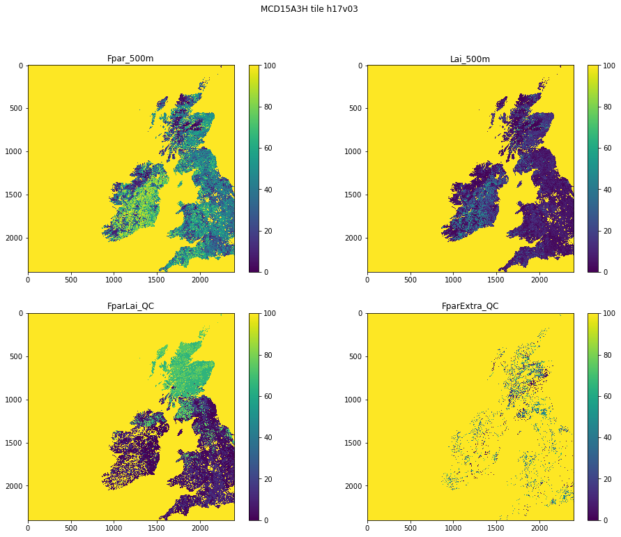

024 Image display : Answers to exercises
Exercise 1
- Plot the first datasets in
data_MCD15A3Has subplots in a 2 x 2 shape.
Hint: Use a loop for the keys of data_MCD15A3H. Set up the 2 x 2 subplots with:
fig, axs = plt.subplots(2,2,figsize=(x_size,y_size))
axs = axs.flatten()
then you can refer to the subplot axes as ax[0], ax[1], ax[2] and ax[3] when you loop over the keys. Don't forget to increase x_size,y_size appropriately.
# ANSWER
# Plot the first datasets in `data_MCD15A3H` as subplots in a 2 x 2 shape.
import matplotlib.pyplot as plt
from geog0111.modis import Modis
kwargs = {
'product' : 'MCD15A3H',
'tile' : 'h17v03',
}
modis = Modis(**kwargs)
data_MCD15A3H = modis.get_data(2020,1+20*4)
# this is most neatly done with a
# loop over the keys we want
# Notice [:4] in array selection of the first 4 items
keys = list(data_MCD15A3H.keys())[:4]
name = f'{kwargs["product"]} tile {kwargs["tile"]}'
# plot size
x_size,y_size = 8,6
shape = (2,2)
fig, axs = plt.subplots(*shape,figsize=(x_size,y_size))
# Hint: Use a loop for the keys of `data_MCD15A3H`. Set up the 2 x 2 subplots with:
#
# fig, axs = plt.subplots(2,2,figsize=(x_size,y_size))
# axs = axs.flatten()
# then you can refer to the subplot axes as
# `ax[0]`, `ax[1]`, `ax[2]` and `ax[3]` when you
# loop over the keys.
# Don't forget to increase `x_size,y_size` appropriately.
if shape[0] == 1 and shape[1] == 1:
axs = [axs]
else:
axs = axs.flatten()# set the figure title
fig.suptitle(name)
# the loop
for i,k in enumerate(keys):
# plot image data
im = axs[i].imshow(data_MCD15A3H[k],\
vmin=0,vmax=100,\
interpolation='nearest')
axs[i].set_title(k)
fig.colorbar(im, ax=axs[i])

Exercise 2
- write a function called
im_displaythat takes as input:- a data dictionary
- a list of keywords of datasets to plot
- optionally:
- a title
- a colourmap name
- lower and upper limits for plot data (vmin, vmax)
- x_size,y_size
- subplots shape : e.g. (2,2)
You should assume some default values for the optional items if not given. For the subplots shape, assume it is (n,1) where n is the length of the keyword list.
You should set the default values of vmin and vmax to None, as this just then takes the dataset default minimum and maximum.
Your code should be well-documented.
- test your code
Note that you will have to experiment a bit with the x_size,y_size values to get a good plot. It is not easy to automate that.
# ANSWER
# write a function called im_display that takes as input:
# a data dictionary
# a list of keywords of datasets to plot
import matplotlib.pyplot as plt
from geog0111.modis import Modis
# first,load the dataset
kwargs = {
'product' : 'MCD15A3H',
'tile' : 'h17v03',
}
modis = Modis(**kwargs)
data_MCD15A3H = modis.get_data(2020,1+20*4)
# optionally:
# a title
# a colourmap name
# lower and upper limits for plot data (vmin, vmax)
# x_size,y_size
# subplots shape : e.g. (2,2)
# You should assume some default values for the optional
# items if not given. For the subplots shape, assume it is `(n,1)`
# where `n` is the length of the keyword list.
# You should set the default values of `vmin` and `vmax` to `None`,
# as this just then takes the dataset default minimum and maximum.
def im_display(data,names,\
title=None,colourmap=None,\
vmin=None,vmax=None,\
x_size=12,y_size=8,shape=None):
'''
a function called im_display that takes as input:
data : a data dictionary
names : a list of keywords of datasets to plot
optionally:
title = None : a title
colourmap = None : a colourmap name
vmin,vmax : lower and upper limits for plot data
x_size=16 : plot x size * shape[0]
y_size=12 : plot y size * shape[1]
shape=None : subplots shape : e.g. (2,2)
'''
# Your code should be well-documented.
# sort out options
n = len(names)
if shape == None:
shape = (n,1)
# adaptive size
x_size = x_size * shape[0]
y_size = y_size * shape[1]
fig, axs = plt.subplots(*shape,figsize=(x_size,y_size))
if shape[0] == 1 and shape[1] == 1:
axs = [axs]
else:
axs = axs.flatten()
# switch off ticks
plt.setp(axs, xticks=[], yticks=[])
# set the figure title
# Note sub-plots have titles too, set in the loop
if title:
fig.suptitle(title)
# loop over names (titles for sub-plots)
for i,k in enumerate(names):
# i is an index (from the enumerate) so
# we can refer to axs[i] as the sub-plot i
# k is the value of names[i] which is the title
# for plot i
# plot image data with vmin and vmax setting
# the upper and lower thresholds
# Use interpolation="nearest" for clearest data plot
im = axs[i].imshow(data[k],\
vmin=vmin,vmax=vmax,\
interpolation='nearest')
# optionally set a colurmap
# be careful of UK/US spellings!
if colourmap:
im.set_cmap(colourmap)
# set title to sub-plot i
axs[i].set_title(k)
# colourbar for sub-plot i
fig.colorbar(im, ax=axs[i])
# test
import matplotlib.pyplot as plt
from geog0111.modis import Modis
kwargs = {
'product' : 'MCD15A3H',
'tile' : 'h17v03',
}
modis = Modis(**kwargs)
data_MCD15A3H = modis.get_data(2020,1+20*4)
# this is mnost neatly done with a
# loop over the keys we want
keys = list(data_MCD15A3H.keys())[:4]
name = f'{kwargs["product"]} tile {kwargs["tile"]}'
im_display(data_MCD15A3H,keys,\
title=None,colourmap=None,\
x_size=4,y_size=14,shape=(4,1))

im_display(data_MCD15A3H,keys,\
title=None,colourmap='gray',\
x_size=4,y_size=3,shape=(2,2))

Exercise 3
- Write a function called
plot_lcthat takes as input modis land cover dataset and plots the associated land cover map - You might use
x_size,y_sizeas optional inputs to improve scaling
# ANSWER
#Â this is a little long-winded, but just wraps up the codes above
import matplotlib
import matplotlib.patches
import matplotlib.pyplot as plt
from geog0111.modis import Modis
import pandas as pd
def plot_lc(data,x_size=12,y_size=12):
'''
takes as input MODIS LC dataset
plots the associated land cover map
x_size,y_size as optional inputs
'''
lc_Type1 = pd.read_csv('data/LC_Type1_colour.csv')
# generate matplotlib cmap and norm objects from these
# get the LC codes, colours and classes
# from LC_Type1_class and LC_Type1_colour
cmap = matplotlib.colors.\
ListedColormap(list(lc_Type1['colour']))
norm = matplotlib.colors.\
BoundaryNorm(list(lc_Type1['code']), len(lc_Type1['code']))
# set up the legend
legend_labels = dict(zip(list(lc_Type1['colour']),\
list(lc_Type1['class'])))
patches = [matplotlib.patches.Patch(color=c, label=l)
for c,l in legend_labels.items()]
fig, axs = plt.subplots(1,figsize=(x_size,y_size))
im = axs.imshow(data,cmap=cmap,norm=norm,interpolation='nearest')
plt.legend(handles=patches,
bbox_to_anchor=(1.4, 1),
facecolor="white")
from geog0111.modis import Modis
from geog0111.plot_lc import plot_lc
year,tiles = 2018,['h31v10']
# ensure tiles is a list
kwargs = {
'tile' : list(tiles),
'product' : 'MCD12Q1',
'sds' : ['LC_Type1']
}
# get the data
modis = Modis(**kwargs)
# specify day of year (DOY) and year
data_MCD12Q1 = modis.get_data(year,doy=1)
# the data we want here
plot_lc(data_MCD12Q1['LC_Type1'])
Last update: October 4, 2020